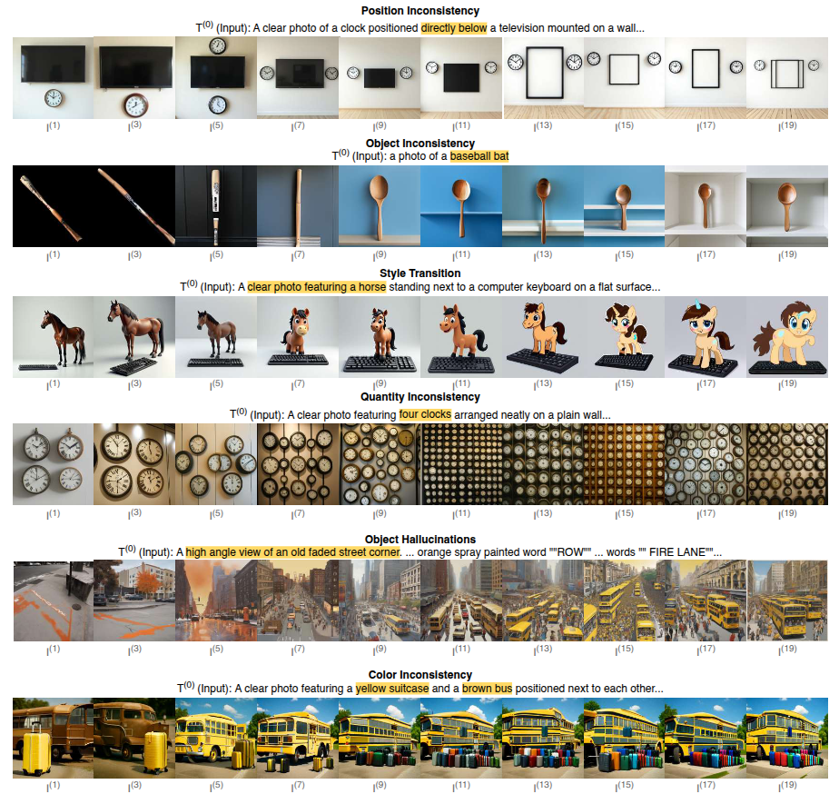

Figure: Information can be lost in different ways during a cyclic inference. In the first row, the model ignores the position of the clock, which is a crucial detail. In the second row, the model changes a baseball bat into a spoon. A model can also change the style from realistic to cartoon, as shown in the third row. In the fourth row the model loses count of four clocks and generates lots of clocks instead. In the fifth row a whole city is hallucinated around an empty road. In the sixth row, the model changes a brown bus into a yellow bus.
Abstract: Employing a single, unified model (UM) for both visual understanding (I2T) and visual generation (T2I) opens a new direction in Visual Language Model research. UCF-UM introduces cyclic evaluation to quantify semantic drift. Metrics include Mean Cumulative Drift (MCD), Semantic Drift Rate (SDR), and Multi-Generation GenEval (MGG). Our results reveal substantial variation in cross-modal stability across models.

git clone https://github.com/mollahsabbir/Semantic-Drift-in-Unified-Models
cd Semantic-Drift-in-Unified-Models
pip install -r requirements.txt
Evaluation data should be organized as follows:
<evaluation_data_root>/
├── captions-first/
│ ├── gen-0.csv
│ ├── gen-1/
│ │ ├── image1.png
│ │ ├── image2.png
│ │ ├── image3.png
│ ├── ...
└── images-first/
Then run:
python measure-drift.py -data <path-to-evaluation-data> -out <path-to-output-folder>@misc{mollah2025telephonegameevaluatingsemantic,
title={The Telephone Game: Evaluating Semantic Drift in Unified Models},
author={Sabbir Mollah et al.},
year={2025},
eprint={2509.04438},
archivePrefix={arXiv},
primaryClass={cs.CV},
url={https://arxiv.org/abs/2509.04438},
}